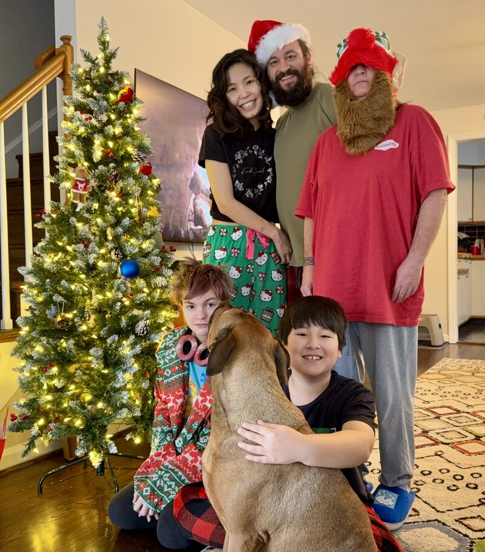

About
Hello! I'm Justin Vermillion, a Cybersecurity PhD Student at New Mexico Institute of Mining & Technology. I'm passionate about the evolving landscape of cybersecurity, particularly where it intersects with human factors engineering and the philosophy behind secure systems.
When I'm not deep in research, I'm enjoying life with my wife, Mono (an architect, painter, and tattoo artist), our three kids, and our dog, Taz.

Research Interests
My research delves into:
- The cybersecurity of generative AI systems
- The intersection of human factors engineering and cybersecurity
- The philosophy of cybersecurity
Hobbies
Outside of academia, I'm a creative at heart:
- Music: I play saxophone, violin, keyboard, and dabble in beatmaking
- Art: Drawing and tattooing (I even own a tattoo studio)
- Outdoors: I love hiking and exploring nature
- Gaming: I'm an avid tabletop gaming enthusiast